Tableau Map Layers: How 2020.4 Changed Everything
At TC26, Tableau gave map layers their moment in the spotlight, we will soon be getting a more dynamic version to play with! But the story of this feature started back in 2020.4, and if you missed it then, you missed one of the most quietly transformative releases Tableau has ever shipped. This is that story - and what I built with it.
What Are Tableau Map Layers?
In November 2020, as part of the 2020.4 release, Tableau quietly dropped a feature called Multiple Marks Layer Support for Maps. The name is a mouthful. The capability is anything but understated.
Before 2020.4, if you wanted to overlay different mark types on a Tableau map - filled polygons for regions, dots for individual data points, lines for connections - your only real option was to layer floating worksheets over each other on a dashboard. It worked, but it was clunky, hard to maintain, and fell apart the moment your dashboard needed to resize.
Map Layers changed that entirely. You can now add multiple marks cards directly to a single worksheet, each one acting as its own visual layer stacked on top of the previous. Polygons, lines, circles, shapes - all on one sheet, all independently controlled, all sitting neatly inside a single Layer Control pane that users can toggle on and off.
The Layer Control that ships with the feature lets the viewer toggle each layer on and off, giving them real control over what they see.
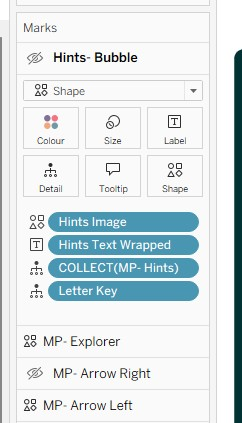
Bending the Rules: The Trick Nobody Expected
Now here is where it gets interesting - and where the Tableau community did what it does best.
The intended use of Map Layers, as documented in Tableau's own Create Geographic Layers for Maps guide, is straightforward: use MAKEPOINT to plot geographic coordinates, stack your mark types, build a richer map. Useful. Expected.
But Tableau Hall of Fame Visionary Jeffrey Shaffer spotted something else almost immediately after the 2020.4 release. By swapping the Longitude and Latitude pills from their default positions - moving them across from Rows to Columns and vice versa - you do not get a map any more. You get a scatter plot, with a fully functional dual-axis system, and crucially, you retain the ability to add more marks cards on top of it.
In other words: you can use Map Layers to build multi-layer scatter plots, custom charts, games, and interactive tools - anything that can be expressed as X and Y coordinates - without the feature ever touching actual geography.
Once you have made that switch, you are no longer constrained by geography. Any field can be the X axis. Any field can be the Y axis. And you can stack as many marks layers on top as you need, each one driven by its own calculation, its own colour, its own mark type.
This completely transformed how I built vizzes. I think it is the single function that has done the most to push what Tableau can actually do. Everything I build now uses this to some extent - because once you understand it, you start to see it everywhere. I learnt everything I now know from getting started with an inital blog about it by Sam Parsons, he wrote it when working for Biztory, though I think it;s now under a different name. But well worth a read to get you going with this feature.
My Example: Escape the Maze
I wanted to build something that would really stress-test what Map Layers could do. Not a conventional chart, not even a conventional map. Something genuinely interactive, with real game logic baked into it using only Tableau's native tools.
The result was Escape the Maze - a fully playable maze game built on a single Tableau worksheet, driven by 17 map layers, 6 parameters, and a stack of calculated fields.
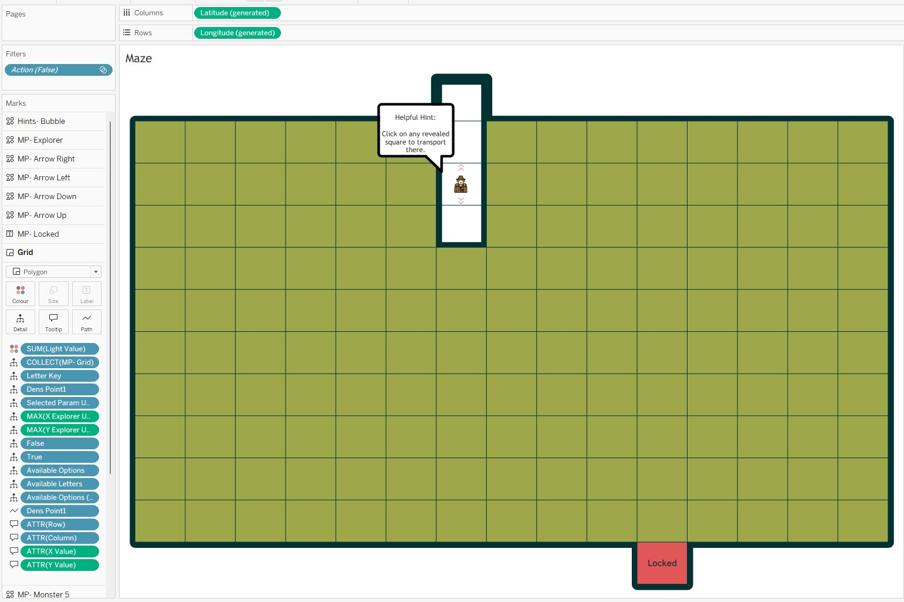
Here is the breakdown of what is inside it.
The 17 Map Layers
Every visual element in the viz is its own marks layer:
-
1 background layer - the maze walls, not always visible, but setting the playing field.
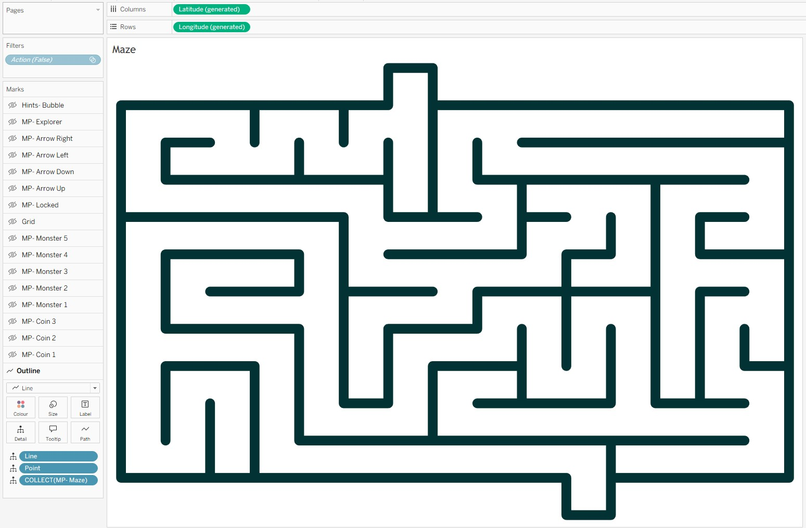
-
3 layers for the treasure coins - each coin is independently controlled, appearing or disappearing as the player finds them.
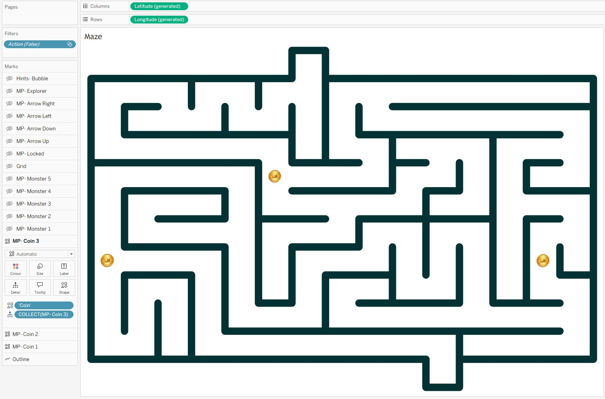
-
5 layers for the monsters - hidden until the player lands on their square, at which point they reveal themselves.
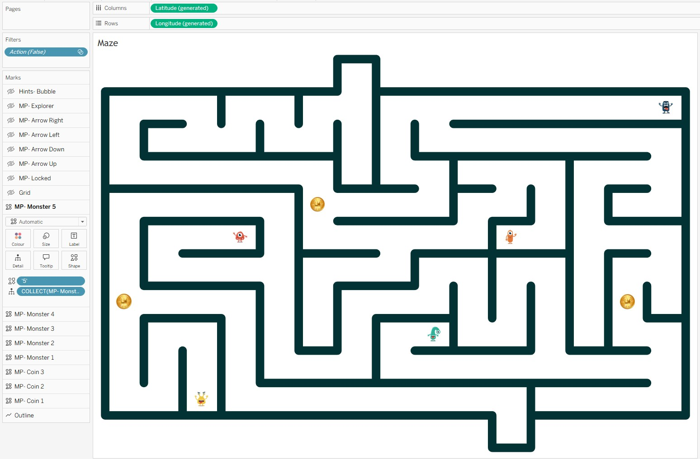
-
1 layer for the exit lock status - switches state depending on whether the player has collected enough coins to unlock the exit.
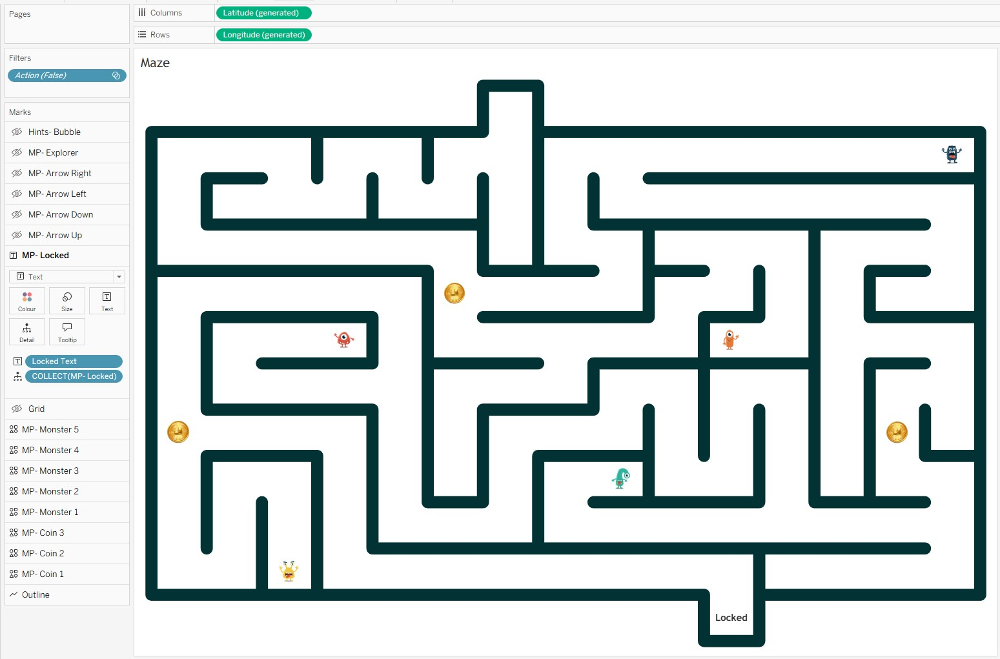
-
4 layers for the guidance arrows - directional arrows appear around the player's current position to show where they can move.
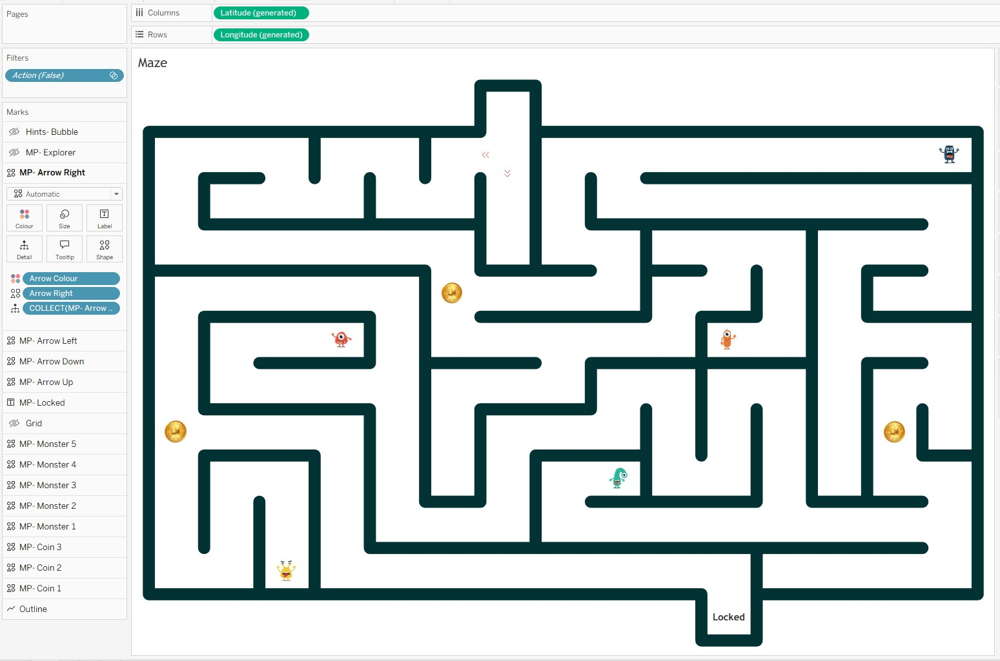
-
1 layer for the explorer - the player's character, positioned dynamically based on parameter values.
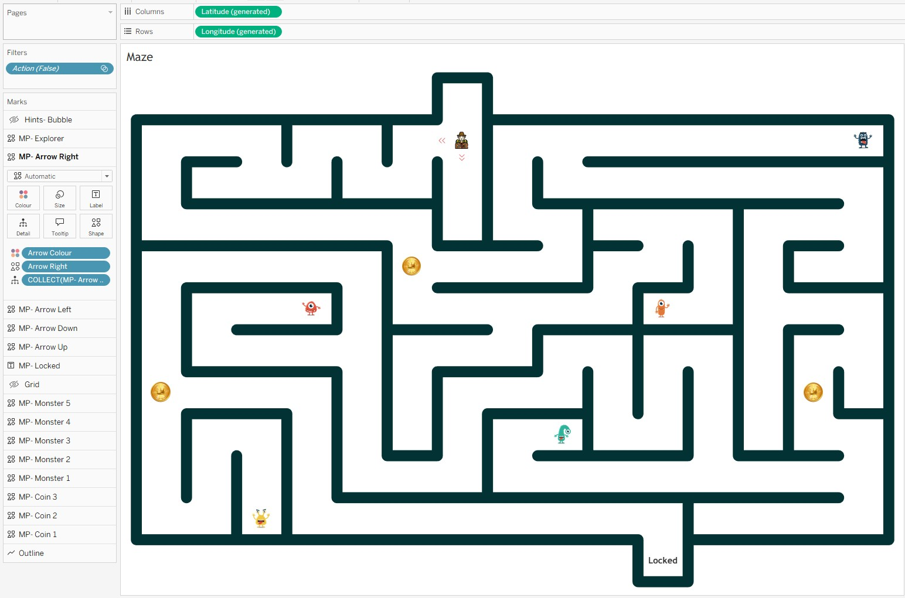
-
1 layer for hint speech bubbles - contextual hints that appear when the player is on certain squares.
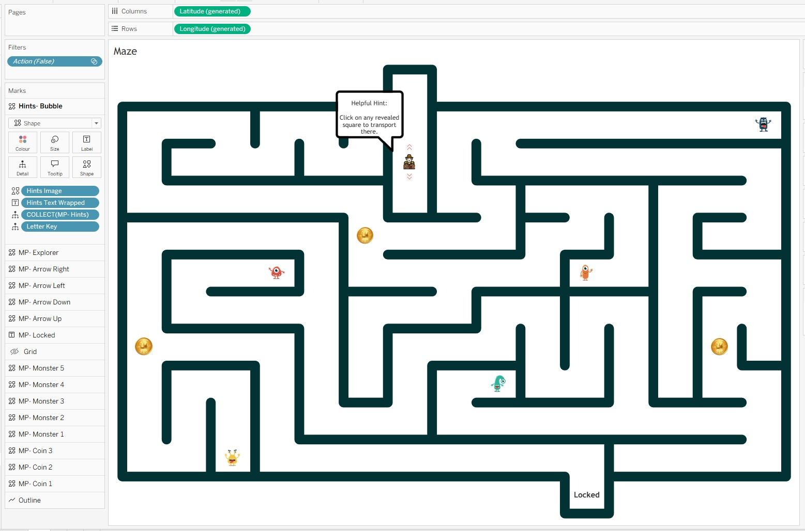
-
1 layer for the interactive grid - the clickable grid the player interacts with, driving all the parameter actions.
The Calculations
X Explorer Update & Y Explorer Update
These two calculations position the explorer on the grid. They check whether a square is in the available options or has already been visited, and return the appropriate coordinate. Otherwise they return NULL, keeping the explorer central on that square.
X Explorer Update
IF CONTAINS([Available Options Update Parameter], [Letter Key])
THEN [X Value]+0.5
ELSEIF CONTAINS([Selected Squares], [Letter Key])
THEN [X Value]+0.5
ELSE NULL
ENDY Explorer Update
IF CONTAINS([Available Options Update Parameter], [Letter Key])
THEN [Y Value]+0.5
ELSEIF CONTAINS([Selected Squares], [Letter Key])
THEN [Y Value]+0.5
ELSE NULL
ENDLight Value
Controls the colour of the grid squares. Green for un visited squares (value 0), red when the exit is locked (value 2), green when the exit is unlocked (value 3) and transparent (1) for visited squares.
IF CONTAINS([Selected Squares],[Letter Key])
THEN 1
ELSEIF CONTAINS([Selected Squares],'GA')
AND CONTAINS([Selected Squares],'DF')
AND CONTAINS([Selected Squares],'GN')
AND [Letter Key] = 'ZZ'
THEN 3
ELSEIF [Letter Key] = 'ZZ'
THEN 2
ELSE 0
ENDHints Text Wrapped
Tableau does not have native word-wrap for label text. This REGEXP_REPLACE calculation inserts a line break every 14 characters at a word boundary - keeping hint text readable within the constrained space of a speech bubble layer.
REGEXP_REPLACE(
[Hints Text]
,'(.{{14}}\s)'
,'$1'+ CHAR(10)
)Monster Filter
Monsters are hidden until you find them. This calculation returns the Letter Key for a square only if the player has already visited it - and returns 'Green' otherwise, mapping to a transparent icon.
Tip: click a highlighted line on the left to show the Line Notes.
Condition check - monster found
Each ELSEIF checks whether the player has visited a specific square (using its Letter Key in
[Selected Squares]) AND whether the current row is that same square. Only when both are true does
this return [Letter Key] - making the monster mark visible on that layer. The five checks cover the
five monster squares in the maze (AO, ED, EK, HI, JC).
Default - monster hidden
Returning 'Green' maps to a transparent or background-coloured shape icon, keeping the monster invisible
until its square is discovered. This is what keeps all unfound monsters hidden across the layer by default.
Available Options & Available Letters
These two work together to track which squares the player can move to next.
Available Options
IF CONTAINS([Available Options Update Parameter], [Letter Key])
THEN [Available Options]
ELSEIF CONTAINS([Selected Squares], [Letter Key])
THEN [Available Options]
ELSE NULL
ENDAvailable Letters
IF CONTAINS([Available Options Update Parameter], [Letter Key])
THEN [Letter Key]
ELSEIF CONTAINS([Selected Squares], [Letter Key])
THEN [Letter Key]
ELSE NULL
ENDSelected Param Update
This is the calculation that accumulates the player's journey. Every time the player clicks a square, this field checks whether that square is in the available options - and if it is, appends its Letter Key to the Selected Squares string. This comma-delimited string is the single source of truth for everything that has happened in the game so far.
Tip: click a highlighted line on the left to show the Line Notes.
Outer condition - is this square a valid move?
CONTAINS([Available Options Update Parameter], [Letter Key]) checks whether this row's square is one
the player is currently allowed to move to. Only valid adjacent squares are included in the Available Options Update Parameter.
Inner condition - already visited?
If the square is valid, this inner check prevents double-counting: if [Letter Key] is already in
[Selected Squares], the player has been here before and we return NULL rather than appending a duplicate.
Append new square
When the square is valid and not yet visited, concatenate [Selected Squares] + [Letter Key] + ',' to build
the running history string. The comma delimiter separates each visited square key in the accumulating string.
Not a valid move
When the outer condition is false (the square is not in the available options), return the existing
[Selected Squares] unchanged. This means clicking a non-adjacent square has no effect on the game state.
The 6 Parameters
All game state is stored in parameters. No external data source, no database - just Tableau parameters holding strings and numbers, updated by parameter actions on every click.
- Current Square - tracks which grid square the explorer is currently on.
- Explorer Parameter - lets the player choose their explorer character image.
- Selected Squares - a comma-delimited string that accumulates every square the player has visited. This one drives most of the game logic.
- X Explorer Parameter - the X-axis position of the explorer character.
- Y Explorer Parameter - the Y-axis position of the explorer character.
- Available Options Update Parameter - restricts movement, ensuring the player can only move to adjacent or previously visited squares.
Five parameter actions connect the clickable grid layer to all the parameters above. Each one fires on a Select action from the Maze sheet.
Parameter Actions: The Engine Room
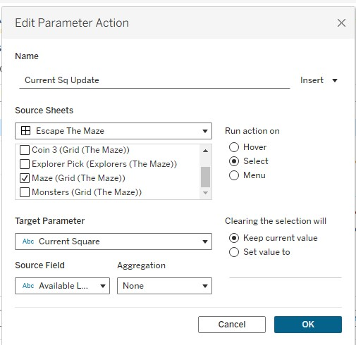
Current Sq Update
This action writes the Available Letters field into the Current Square parameter. It keeps track of which square the explorer is currently standing on, which drives the speech bubble hints and the exit unlock logic.
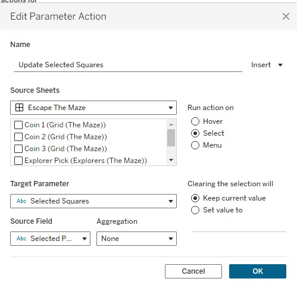
Update Selected Squares
This action writes Selected Param Update into the Selected Squares parameter. This is the action that remembers where you have been - every square you visit gets appended to the string, and the entire game state flows from this single parameter.
X Expl Update
Writes MAX(X Explorer Update) into the X Explorer Parameter, using Max aggregation. This moves the explorer character horizontally to the clicked square's X position.
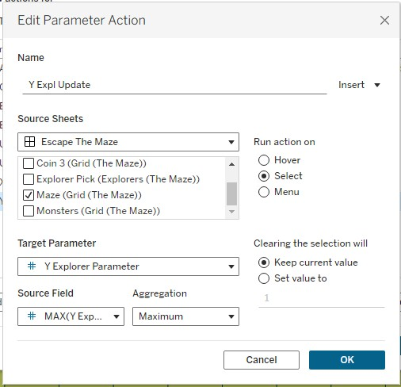
Y Expl Update
Writes MAX(Y Explorer Update) into the Y Explorer Parameter, using Max aggregation. This moves the explorer character vertically to the clicked square's Y position.
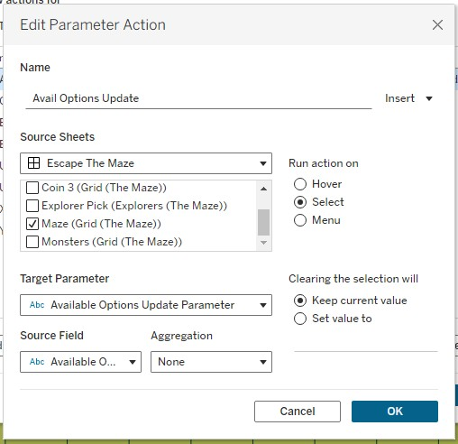
Avail Options Update
Writes the Available Options field into the Available Options Update Parameter. This restricts the player's next valid move to only the squares adjacent to their current position, preventing them from jumping across the maze.
Every click on the grid fires all five actions simultaneously. In sequence, they update where the player is, where they have been, where the explorer sits on screen, and where they are allowed to go next. The whole game state updates in a single interaction - no external data, no JavaScript.
The Last Thread
When 2020.4 dropped, Map Layers felt like a mapping improvement. And it was - for cartographers and geospatial analysts, the ability to stack mark types cleanly onto a map was long overdue. But the community saw something else in it almost immediately: a general-purpose layering system that just happened to use geographic coordinates as its default canvas.
Escape the Maze is one answer to the question of what you can do when you take that idea to its limit. Seventeen layers, six parameters, five parameter actions, and a pile of string manipulation calculations - all in a single Tableau worksheet, all driven by the same underlying trick Jeffrey Shaffer spotted in the first week after release.
The feature is now several versions old and gets less airtime than newer releases. But if you are building anything complex in Tableau today - interactive tools, custom chart types, anything that needs multiple overlapping visual elements on a single sheet - Map Layers is almost certainly part of the answer. It was in 2020.4. It still is now.
If you want to have a go at the maze, you can find it on
Tableau Public here.
And if you build something with Map Layers yourself, I would love to see it.
Rob.